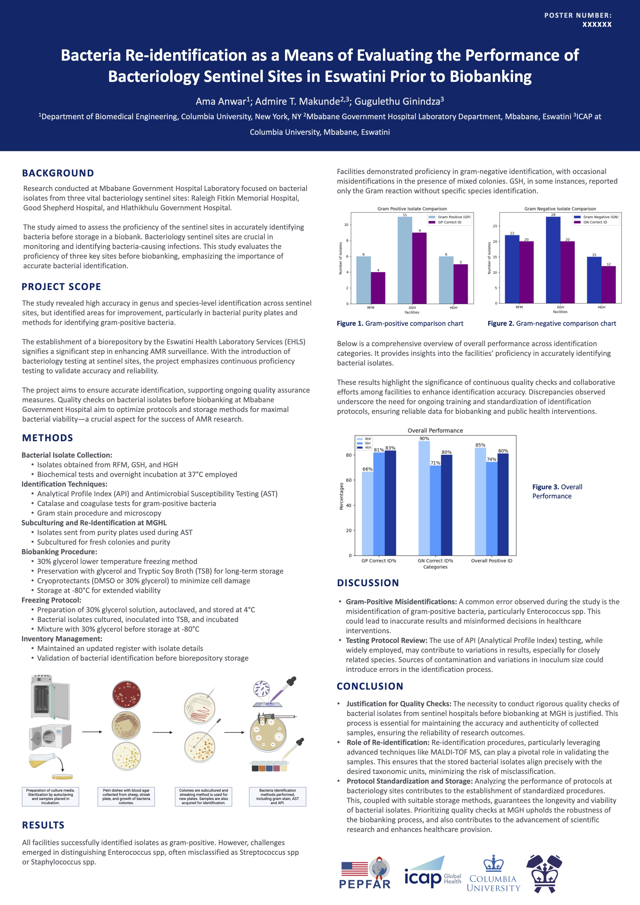

← Back to research
EXPERIENCE / ICAP, COLUMBIA UNIVERSITY
Clinical Microbiology in Eswatini
Working with clinical laboratories on bacterial identification and microbiology workflows.

Overview
During an internship in Eswatini, I worked with clinical laboratory teams on bacterial identification and biobanking workflows.
Responsibilities & Methods
Methods included API 20E/20NE, catalase and coagulase testing, MALDI-TOF MS, Vitek 2 Compact, subculture, and glycerol-based biobanking.
Outcomes
The work involved comparisons of organism identification across laboratory sites. Include site-specific results only after confirming they are appropriate to share.